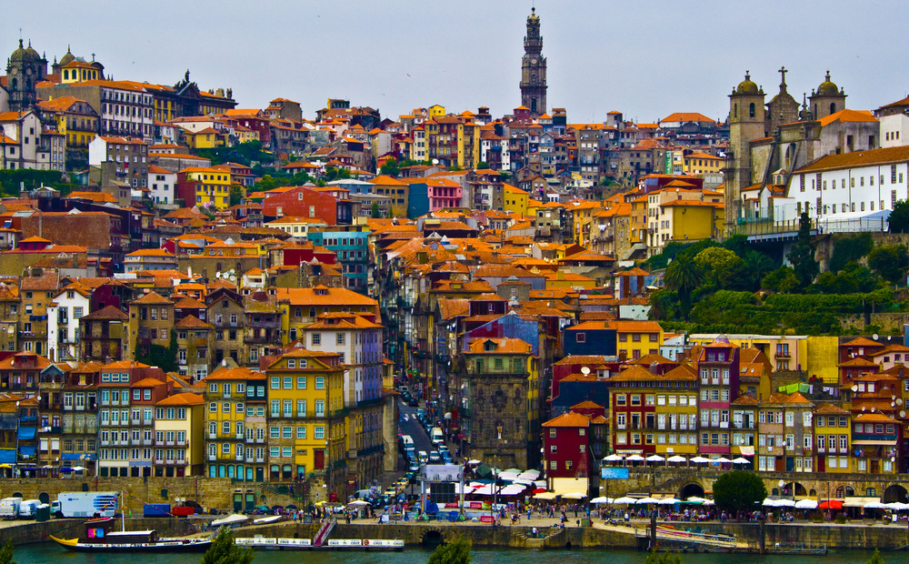
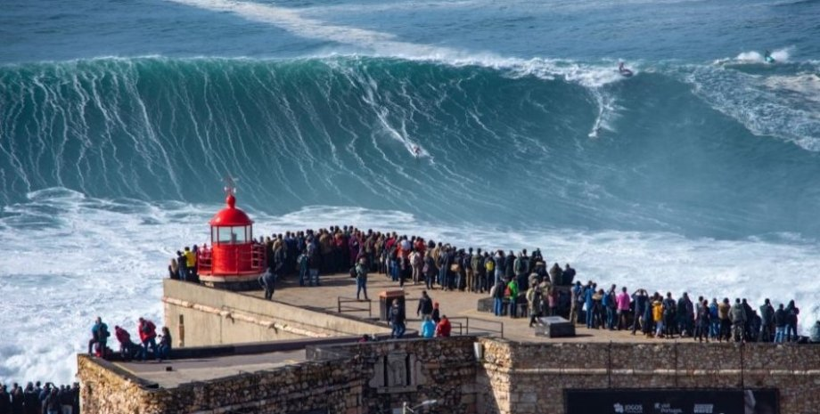
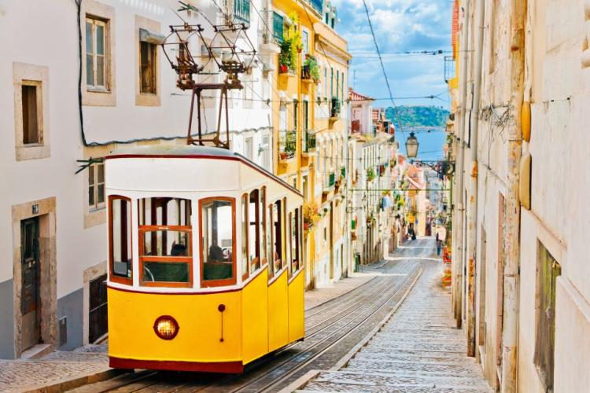
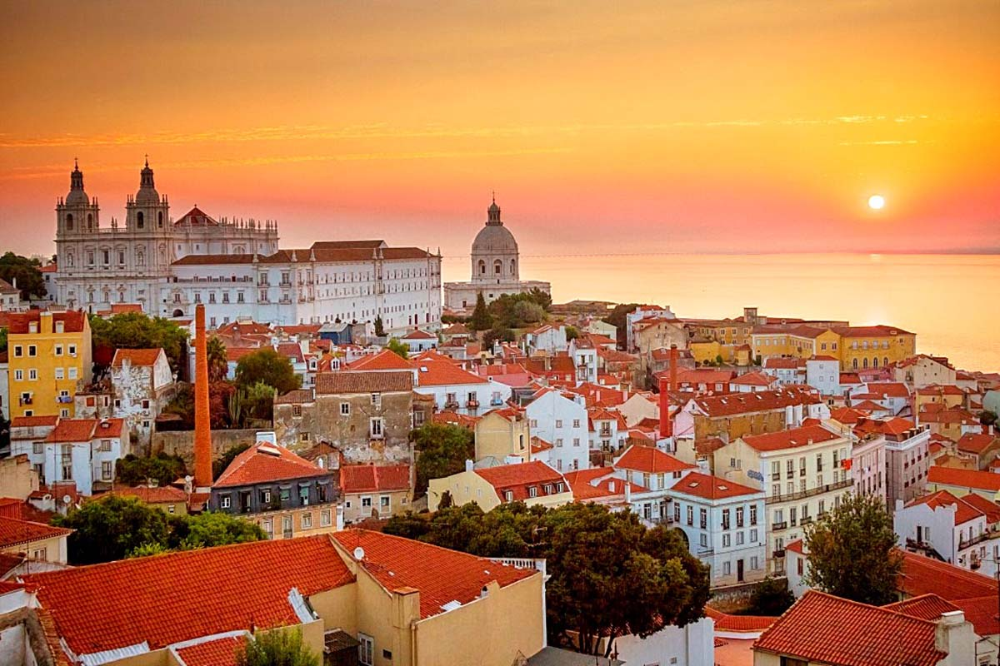
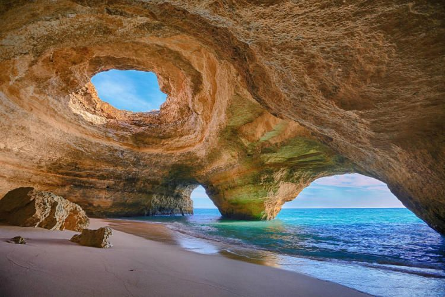
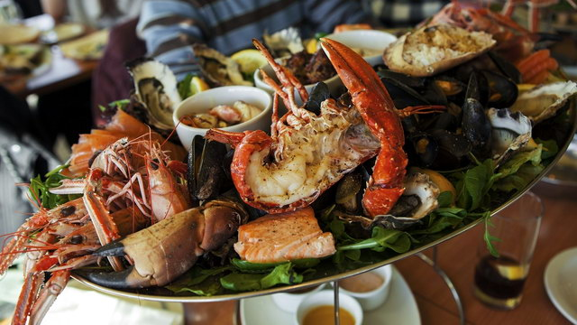

Португалия
Про країну
Португалія - країна для гедоністів зі стажем. Блукаючи затишними вулицями її міст, можна на хвилину відчути себе
де-небудь в Іспанії або Південної Франції. З однією лише принциповою різницею: тут майже немає всюдисущих туристів
формату «галопом по Європах», це місце - швидше для заможних мандрівників, що віддають перевагу відпочинку
особливому,елітарному. Тут цінують традиції, шанують багату історичну спадщину, вміють насолоджуватися життям і не скупляться
на комфорт, створюючи його і для себе, і для дорогих у всіх сенсах гостей.
Вдихаючи запах апельсинів і евкаліптів, прогулюючись набережними, насолоджуючись вином під сумні пісні фаду в
колоритних кафе, можна трохи ближче пізнати справжню Європу - ту, що занадто гордовита і прекрасна, щоб брати участь
в туристичних гонках.
Регіони і курорти Португалії
Столиця - Лісабон, що став центром країни в 13 столітті, через 5 століть зруйнований землетрусом, але в найкоротші
терміни відродивший велич. Найвідоміша пам'ятка - замок Св. Георгія: грізна фортеця на пагорбі, яка колись належала
мавританському емірові, а після - португальським королям. Уцілів в землетрусі і Кафедральний собор Лісабону, в чиєму
образі вгадуються риси рококо, бароко, готики і неокласицизму. В околицях столиці є пляжі - низка фешенебельних
курортів, зветься Лісабонською Рів'єрою.
Головна прикраса Лісабона - звивисті вулиці старих районів: петляючи між акуратними будиночками з декором з кахлів
азулежуш, не можна не відчути настрій міста.
Друге за відвідуваністю місто - Порту, що веде свою історію з 4 століття. Знайомство зі столицею портвейну краще почати
- ні, не з бару - з історичного центру, що охороняється ЮНЕСКО. Тут розташовані і кафедральний собор, що нагадує
фортецю, і вражаючих розмірів церква Сан-Франсишку. Втомившись від монументальності, варто відправитися в район Рібейра:
його різнокольорові будиночки, ніби наліплені один на одного, виглядають чарівно. А після екскурсії саме час відпочити
на будь-якому з мелкогалечних або піщаних пляжів міста.
На 50 км на північ від Порту знаходитьсяp Брага - центр португальського католицизму з резиденцією архієпископа. Не дивно,
що основні туристичні об'єкти тут - собори і церкви, зведені в готичному, романському і інших стилях. Головна визначна
пам'ятка Коїмбри - найстаріший в країні університет: комплекс ошатних барочних будівель, в числі яких - навіть колишній
королівський палац. А ще тут відмінний шоппінг: з численних книжкових крамниць, бутиків і антикварних салонів
неможливо піти без покупок.
Евора - ідеальне місце для гастрономічних насолод: місцеві сири, десерти і вина - вище всяких похвал. Апетит можна
нагуляти, оглядаючи архітектурні красоти: в околицях прекрасно збереглися будівлі епохи неоліту, а в самому місті -
руїни римського храму і середньовічні собори.
За найсмачнішими морепродуктами краще вирушати в Фару, звідки зазвичай починаються екскурсії по півдню Португалії. В
портові ресторанчики зручно заходити прямо з пляжу, удостоєного Блакитного прапора.
Обідуш - місто маленьке і дуже затишне: білосніжні вілли, бруковані доріжки, яскраві клумби ніби зійшли з красивої
листівки. Знайшлося тут місце і для пам'яток: чого вартий один лише середньовічний замок, де при бажанні - і достатній
товщині гаманця - можна навіть переночувати. А Сетубал славиться і мальовничими пейзажами, і старовинною архітектурою:
фортеці і собори на тлі гір - видовище неймовірне.

Різниця в часі
Територія Португалії розташована в двох часових поясах: UTC-1 і UTC. У тимчасовій зоні UTC-1 знаходяться Азорські
острови. Інша ж частина країни (наприклад, міста Порту і Фару) орієнтується на час «за Гринвічем». Влітку в Португалії
переводять стрілки годинника.
Різниця в часі з Києвом -2 години
Клімат Португалії
У Португалії - субтропічний середземноморський клімат: м'який, без різких коливань температур. На півночі через
Гольфстрім переважає морський клімат. Літо тут сухе і сонячне, але не спекотне (середня температура близько +20 ° C, в
горах - близько +18 ° C), зима прохолодна (від +4 ° C до +10 ° C) і дощова. На півдні країни тепло і сухо. Середні
температури січня +5 ... + 10 ° C, липня +20 ... + 27 ° C. Вода влітку прогрівається до +20 ... + 23 ° C.
Найкраще знайомитися з Португалією з травня по жовтень: погода в цей час майже завжди тепла і сонячна, дощі - велика
рідкість, а значить, комфортно буде і на пішій екскурсії, і на пляжі. Тільки ось з купанням варто бути обережніше: через
океанські течії вода на португальському узбережжі прохолодна. Плавати краще на південь від Лісабону: там Атлантика
тепліше на 2-3 ° C і різниця дуже помітна. На північ від столиці більшість відпочиваючих воліють засмагати і
насолоджуватися пейзажем. Весна - найкращий час для серфінгу, а ось взимку в країні дощитиме, хоча на південь частенько
повертається сонце.

Транспорт
Автобуси в Португалії бувають чотирьох видів: міжміські експреси (expressos), місцеві (rapidas), так звані carreiras,
помічені знаком «CR» (зупиняються на кожному перехресті), і швидкісні машини класу люкс - alta qualidade. Квиток Лісабон
- Фару на автобусі-експресі обійдеться десь в 17-35 EUR (4 години на дорогу). Автобус Лісабон - Порту слідує 3,5 години,
а проїзд у ньому коштує від 19-29 EUR. До речі, у високий сезон квитки краще бронювати заздалегідь. Розцінки на місцевих
маршрутах доступні, а влітку - тим паче. Часто передбачені знижки для пасажирів у віці до 26 років.
Залізниця зв'язує Лісабон з півднем Португалії. Поїздки на потягах триваліші, ніж на автобусах-експресах, зате
обходяться дешевше. Потяги є регіональні, що зупиняються на всіх зупинках, досить швидкі міжрегіональні та
поїзди-експреси.

Готелі Португалії
У Португалії переважають готелі високого рівня. Велика їх частина працює на базі сніданків, напівпансіон зустрічається
рідко, системи «все включено» немає. Це пояснюється тим, що в країні дуже смачна і різноманітна кухня: туристи вважають
за краще спробувати все в різних місцях, а не харчуватися в готелі зі шведського столу.
Кращі готелі - старовинні готелі (pousadas), що відповідають рівню 4-5 «зірок». Історичні «пусади» - це старі замки і
фортеці, реконструйовані і перетворені в розкішні готелі (всього їх близько 50). Зупинятися в них вважається престижним.
Також існують регіональні «поузади», що представляють собою садиби або будинки, побудовані в характерному для цієї
місцевості архітектурному стилі. Тут гостей годують в основному стравами місцевої кухні.
Є в Португалії житло і для бюджетних туристів. Наприклад, місцеві хостели визнані одними з кращих в Європі: вони
регулярно лідирують в престижних світових рейтингах і радують постояльців гостинністю, чистотою і високою якістю
сервісу. Вартість ліжка в загальному номері в Лісабоні, Порту або Алгарве - від 16 EUR за ніч. Розцінки в столичних
готелях 2 * - від 55 EUR, в готелях класом вище - від 65 EUR за добу.
Напруга в мережі - 220 В, 50 Гц, розетки стандартні європейські.

Як уникнути проблем
У Португалії не страшно гуляти по вулиці в будь-який час доби, проте цінні речі в машині або на пляжі зовсім без нагляду
краще не залишати. Не варто носити портмоне в кишені, фото- і відеокамери розумніше вішати на шию. Машини в країні майже
не викрадають, тут немає ніяких небезпечних захворювань, не потрібні спеціальні щеплення.
У великих містах можна пити воду прямо з-під крана, але в деяких районах - наприклад, в Алгарве - вона занадто солона.
Португалія розташована в сейсмічно активній області, приблизно двічі на рік тут трапляються землетруси. Ще одна природна
небезпека - лісові пожежі, так що розводити багаття на пляжах, в парках і лісосмузі строго заборонено: пощастить -
звільнитеся штрафом, не пощастить - тюремним ув'язненням. Крім того, місцевий уряд щорічно посилює заборони на куріння:
запалити сигарету можна тільки в спеціально відведених зонах на вулицях і в закладах громадського харчування, плата за
непослух - 50-750 EUR. А ось до легких наркотиків, як не дивно, правоохоронці більш-менш лояльні. Купити «травку» можна
прямо в центрі, ось тільки в 90% випадків це буде низькоякісна підробка. І лояльність лояльністю, але нахабніти і
демонстративно затягуватися косяком посеред проспекту все ж не варто.
Корисні телефони: швидка допомога, поліція, пожежна охорона: 112, служба порятунку (екстрена допомога): 115, термінова
допомога на дорогах: 308, довідкова служба: 118, інформація для туристів: 0-800-296-296.
Пляжі Португалії
У Португалії всі пляжі муніципальні. За два лежака і парасольку доведеться викласти від 8 EUR в день. Втім, забезпечених
туристів (а інші в країну практично не їдуть) це не лякає. На Лісабонській Рив'єрі і в Алгарве - дрібний білий пісок, на
Мадейрі пляжі галькові або штучні. Прапорці попереджають про стан океану: червоні - море бурхливе і плавати категорично
заборонено, жовті - потрібно бути дуже уважним, зелені - безпечно. Сезон офіційно стартує 15 червня і триває аж до 15
вересня.
Найближчий до Лісабону пляж - в містечку Каркавелуш, який не вщухає ні вдень, ні вночі. Поки світить сонце, тут
загоряють на узбережжі: широкому, піщаному, з пологим входом у воду. Це відмінне місце для серфінгу, пікніків і
неспішного лавірування між барами. А вночі Каркавелуш перетворюється в модний тусовочний центр: веселощі в клубах і на
піску затягується до світанку.
Найвідоміший спортивний пляж - «Гіншу» в місті Кашкайш неподалік від столиці. Тут завжди вражаючі хвилі і вітер, а тому
сюди як магнітом тягне серферів, виндсерферов і кайтеров. Узбережжя широке, під'їзд зручний, поруч - кафе і майданчики
для пікніків. Адептам більш спокійного відпочинку підійдуть сусідні «Торре» або «Рібері».
Ще одна знаменита точка для підкорювачів хвиль - мальовничий пляж «Рібейра-да-Ілляш» в містечку Ерісейра, який завоював
неофіційне звання «світового заповідника серфінгу».
Узбережжя півдня Португалії всипане пляжами, один з найпопулярніших курортів Алгарве - Лагуш: тут і скласти тунелі, і
відокремлені куточки для нудистів, і обладнані зони для відпочинку. Неподалік, на острові Тавіра, знаходиться один з
найстаріших нудистських пляжів c затишною атмосферою, чистою водою і промовистою назвою «Пляж голої людини». У пошуках
усамітнення варто відправитися і на Мадейру: наприклад, на крихітному острові Порту-Санту - 9-кілометрова смуга
дивовижних піщаних пляжів.
Засмагати і купатися можна не тільки на березі океану: в містечку Маседо-де-Кавалейруш зона відпочинку обладнана у
водосховища Албуфейра-ду-Азібу. Вода тут чиста, річковий пісок білосніжний, від краси заходів захоплює дух, а гарантом
безпеки виступає Блакитний прапор.

Дайвінг
Дайвери люблять Португалію за дивовижну красу підводного світу, відмінну видимість на різних глибинах, м'який клімат і
розвинену інфраструктуру, так що навіть прохолодний океан - не перешкода. Найбільш популярне місце для занурень -
Мадейра: в чудових декораціях - посеред скель, рифів, підводних печер і затонулих суден - живуть самі різні риби і
молюски.
У природному заповіднику «Гаражан» водяться барракуди, морські окуні, тунці і манти, біля узбережжя Машіку ростуть
ефектні чорні корали, а підводне життя у пляжу «Рейш Магуш» активізується вночі.
На Азорські острови частіше їдуть професіонали: дайвінг тут непростий, але дуже захоплюючий. У острова Санта-Марія
зустрічаються манти і китові акули, у Піку і Файал - блакитні акули, кити і дельфіни, у Корву - гігантські риби всіх
мастей.
Архіпелаг Берленгаш підходить для дайверів різного рівня підготовки: тут можна спостерігати за морськими лящами і
окунями, вивчати печери і затонулі кораблі. Сезімбра з кальмарами, восьминогами і морськими вуграми популярна у
новачків. Багато шкіл відкрито і в Алгарве: найцікавіше в тутешніх водах - зазнали катастрофи судна часів Другої
світової війни, а ще - стрімкі кліфи, загадкові гроти і снують всюди краби, восьминоги та інші спритні створення.
Шопінг
Кухня і ресторани Португалії
Португальська кухня радує ситними і різноманітними стравами з м'яса, риби і овочів, але все ж рибна кулінарія - основний
її напрямок. Кухарям країни відомі понад 300 способів приготування тріски, вони вміють готувати безліч страв з сардин,
скумбрії, окуня і форелі.
Портвейн - візитна картка Португалії: білий п'ють як аперитив, червоний - на десерт.
Рекомендуємо скуштувати «катаплану» - ситне листкове блюдо з м'яса, риби або морепродуктів, що подається прямо в
сковороді. Найвідоміше перше - зелений суп «кальдо верде» з капусти, цибулі, картоплі та ковбаси. М'ясоїдам припадуть до
смаку «кузіда-а-Португеза» (асорті, секрет якого - строго вивірена послідовність додавання різних сортів м'яса при
приготуванні) і тушкована з креветками або черепашками свинина по-алентежанскі. Місцевий фастфуд - сендвічі
«франсезінья»: тости з ковбасою, шинкою і м'ясом (одночасно!), политі соусом і розплавленим сиром. Кращий десерт -
тістечка «паштеіш», апетитно присипані корицею і цукровою пудрою.
Найдивніший португальський делікатес - «персебеш»: тих, кого не відлякає його вид (нагадує копитця) і ціна (добувати
його з морського дна досить небезпечно), чекає знайомство з ні з чим не порівнянним смаком.
Кухня Мадейри відрізняється від континентальної ще більшим вибором риби і морепродуктів, а також широким використанням
фруктів і місцевих спецій. Найвідоміший делікатес - риба-меч, яка готується десятками способів.
Вагітним не рекомендується їсти страви, приготовані з риби-меч.
Португальські вина славляться на весь світ своїм вишуканим смаком. У країні виробляється величезна кількість червоних,
білих і «зелених», що нагадують шампанське, вин. Останні заслужили свою назву зовсім не через колір, а через вік. Це
молоді сухі вина, вироблені в північній провінції Мінью. Вишуканий напій з легкою кислинкою і бульбашками відмінно
втамовує спрагу і підходить до багатьох страв. А портвейн - і зовсім візитна картка Португалії: білий п'ють як аперитив,
а червоний - на десерт.
Традиційний час обіду - з 12:00 до 15:00. У Алгарве влітку все відкрито майже 24 години на добу. У маленьких дешевих
ресторанчиках годують не менш смачно, ніж в дорогих.
Чайові в Португалії не мають офіційного статусу, проте 10% від суми рахунку не забороняється залишити в ресторані, таксі
або кафе.
